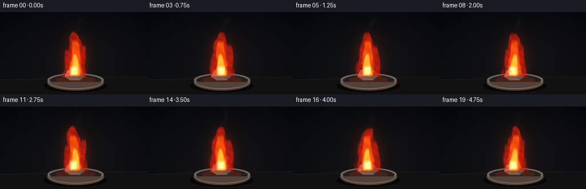
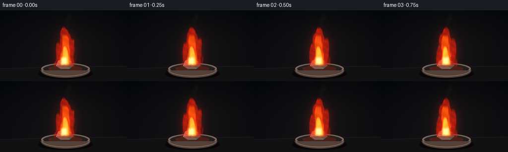

CODING AGENTS AS PIXEL WORLD MODELS
traex/GPT-5.6-Sol · material_0006
点击播放 · 原生 RGB 像素
此结果可播放，但该运行尚未通过最终提交审核。页面展示不代表评测通过。
逐轮保存的候选
回放视频、检查图与代码变化。
每份候选均可单独播放。实际图片检查记录在下方工具轨迹中。
候选 01播放与检查图
点击播放 · 原生 RGB 像素


展开代码变化
--- 上一保存版本
+++ 本次保存版本
@@ -0,0 +1,211 @@
+from pathlib import Path
+import json, math
+import numpy as np
+from PIL import Image, ImageDraw, ImageFilter
+import artifact_io
+
+ROOT = Path(__file__).resolve().parent
+SPEC = json.loads((ROOT / "task_spec.json").read_text())
+W, H, N, FPS = SPEC["width"], SPEC["height"], SPEC["frames"], SPEC["fps"]
+S = 4
+w, h = W*S, H*S
+rng = np.random.default_rng(7319)
+
+# Static fine-grain texture, kept fixed so the camera/background does not crawl.
+noise = rng.normal(0, 1, (h, w)).astype(np.float32)
+
+def smoothstep(a, b, x):
+ q = np.clip((x-a)/(b-a), 0, 1)
+ return q*q*(3-2*q)
+
+def add_layer(base, color, alpha):
+ """Alpha composite a flat color onto float RGB image."""
+ a = np.clip(alpha, 0, 1)[..., None]
+ return base*(1-a) + np.array(color, np.float32)*a
+
+def blurred(mask, radius):
+ im = Image.fromarray(np.uint8(np.clip(mask,0,1)*255), "L")
+ return np.asarray(im.filter(ImageFilter.GaussianBlur(radius*S)), np.float32)/255
+
+def poly(draw, pts, fill):
+ draw.polygon([(int(x*S), int(y*S)) for x,y in pts], fill=fill)
+
+def ellipse(draw, box, fill, outline=None, width=1):
+ b = tuple(int(v*S) for v in box)
+ draw.ellipse(b, fill=fill, outline=outline, width=max(1,int(width*S)))
+
+def scene(t, frame_idx):
+ yy, xx = np.mgrid[0:h, 0:w].astype(np.float32)
+ X, Y = xx/S, yy/S
+
+ # Dark laboratory background with cinematic vignette and stable sensor grain.
+ vertical = Y/H
+ bg = np.zeros((h,w,3), np.float32)
+ bg[...,0] = 8 + 8*vertical
+ bg[...,1] = 11 + 7*vertical
+ bg[...,2] = 15 + 7*vertical
+ # faint out-of-focus warm wall patch and cool left edge
+ haze = np.exp(-(((X-150)/100)**2 + ((Y-67)/72)**2)*1.1)
+ bg += haze[...,None] * np.array([7.0, 3.0, 1.0])
+ vign = np.clip(1 - 0.42*(((X-W/2)/(W*.70))**2 + ((Y-H/2)/(H*.78))**2), .52, 1)
+ bg *= vign[...,None]
+ bg += noise[...,None]*np.array([0.75,0.62,0.55])
+
+ # Flame coordinate fields. Main silhouette is continuously animated but persistent.
+ base_y = 111.0
+ v = (base_y-Y)/77.0
+ bend = (2.2*np.sin(t*2.15 + v*5.2) + 3.2*np.sin(t*.82 + v*2.1+1.0))*np.clip(v,0,1)**1.35
+ bend += 1.1*np.sin(t*4.0-v*8.0)*np.clip(v,0,1)
+ center = 131.0 + bend
+ edge_noise = 1 + .10*np.sin(X*.36 + v*9.2 + t*3.0) + .06*np.sin(X*.81-v*15-t*2.1)
+ width = (20.5*(np.clip(1-v,0,1)**.58)+1.6)*edge_noise
+ d = np.abs(X-center)/(width+1e-3)
+ cap = 1.015 + .026*np.sin(t*2.7) + .018*np.sin(t*5.1+1.4)
+ main = smoothstep(1.08, .76, d) * smoothstep(-.08,.04,v) * smoothstep(cap,cap-.09,v)
+
+ # Licking side lobes make the fire read as a real, steady flame rather than a cone.
+ def tongue(cx, wid, top, phase, lean):
+ c = 131 + cx + lean*v + 2.0*np.sin(t*2.5+phase+v*5.8)
+ ww = wid*(np.clip(1-v/top,0,1)**.48)+.9
+ dd = np.abs(X-c)/(ww+1e-3)
+ return smoothstep(1.1,.7,dd)*smoothstep(-.05,.05,v)*smoothstep(top,top-.10,v)
+ left = tongue(-10.8, 8.0, .61+.025*np.sin(t*3+1), 1.4, -2.0)
+ right = tongue(11.0, 8.8, .72+.022*np.sin(t*2.6), 3.1, 3.8)
+ outer = np.maximum(main, np.maximum(left*.92,right*.95))
+ # Internal moving translucency gives turbulent detail without disrupting silhouette.
+ turbulence = .83 + .17*np.sin(X*.29 - Y*.17 + t*4.4)*np.sin(Y*.31+t*2.0)
+ outer *= np.clip(turbulence, .67, 1)
+
+ # Broad calcium-red illumination on air/background.
+ glow0 = blurred(np.clip(outer*1.25,0,1), 13)
+ glow1 = blurred(np.clip(outer,0,1), 5)
+ bg += glow0[...,None]*np.array([52, 8, 2],np.float32)
+ bg += glow1[...,None]*np.array([33, 4, 0],np.float32)
+
+ # A warm pool of light on the bench.
+ table_light = np.exp(-(((X-131)/70)**2 + ((Y-121)/24)**2)*2.0)*smoothstep(105,125,Y)
+ bg += table_light[...,None]*np.array([37,12,4],np.float32)
+ canvas = np.uint8(np.clip(bg,0,255))
+ im = Image.fromarray(canvas, "RGB")
+
+ # Smoke behind the flame: thin, semi-transparent curls at the upper tip.
+ smoke = Image.new("RGBA", (w,h), (0,0,0,0)); sd = ImageDraw.Draw(smoke)
+ for j in range(3):
+ pts=[]
+ for k in range(24):
+ q=k/23
+ x0=133 + 7*q + 3.0*math.sin(t*1.2+j*1.7+q*5.1) + j*1.5
+ y0=35 - q*25 - j*2
+ pts.append((int(x0*S),int(y0*S)))
+ sd.line(pts, fill=(115,101,95,28-5*j), width=(3+j)*S)
+ smoke=smoke.filter(ImageFilter.GaussianBlur(3.1*S))
+ im=Image.alpha_composite(im.convert("RGBA"), smoke)
+
+ # Work surface and refractory dish, lit by red flame reflections.
+ obj=Image.new("RGBA",(w,h),(0,0,0,0)); od=ImageDraw.Draw(obj)
+ # bench plane
+ od.polygon([(0,118*S),(w,113*S),(w,h),(0,h)], fill=(17,17,18,255))
+ od.line([(0,118*S),(w,113*S)], fill=(42,34,31,180), width=S)
+ # soft cast shadow
+ ellipse(od,(76,117,187,140),(0,0,0,165))
+ # dish outer body / warm front rim
+ ellipse(od,(82,108,182,137),(59,52,49,255))
+ ellipse(od,(83,107,181,130),(116,99,88,255))
+ ellipse(od,(87,110,177,128),(34,29,29,255))
+ # inner ember-red reflection
+ ellipse(od,(97,112,166,125),(72,31,22,255))
+ # front wall hides the lower inner ellipse
+ od.pieslice((83*S,107*S,181*S,137*S), 0, 180, fill=(74,64,59,255))
+ od.arc((84*S,108*S,180*S,134*S), 4,176, fill=(151,116,92,255), width=1*S)
+ od.arc((86*S,109*S,178*S,131*S), 184,355, fill=(41,37,36,255), width=2*S)
+ # red reflected stripe
+ od.arc((93*S,111*S,170*S,131*S), 16,164, fill=(173,67,39,150), width=1*S)
+
+ # Calcium piece: irregular silvery, oxidized facets, not a generic coal.
+ poly(od,[(113,113),(117,102),(129,98),(143,103),(148,112),(140,119),(122,119)],(112,108,102,255))
+ poly(od,[(117,102),(129,98),(132,109),(113,113)],(174,170,158,255))
+ poly(od,[(129,98),(143,103),(132,109)],(130,127,118,255))
+ poly(od,[(132,109),(143,103),(148,112),(140,119)],(83,81,78,255))
+ poly(od,[(113,113),(132,109),(140,119),(122,119)],(99,93,86,255))
+ od.line([(118*S,103*S),(129*S,99*S),(142*S,104*S)],fill=(221,205,182,220),width=S)
+ # hot oxidized edge and granular pocks
+ od.line([(115*S,111*S),(122*S,116*S),(140*S,117*S)],fill=(232,75,28,220),width=S)
+ for px,py,r in [(123,105,1),(136,105,.8),(128,113,.7),(141,110,.7),(120,109,.5)]:
+ ellipse(od,(px-r,py-r,px+r,py+r),(47,44,42,220))
+ im=Image.alpha_composite(im,obj)
+
+ # Flame color volumes, composited as translucent luminous shells.
+ # Red calcium shell
+ flame=np.asarray(im.convert("RGB"),np.float32)
+ shell_alpha=np.clip(outer*.78,0,.82)
+ # Color shifts from deep carmine boundary to orange-red center.
+ flame=add_layer(flame,(218,30,10),shell_alpha)
+
+ inner_center = center + .4*np.sin(t*2.9+v*4)
+ iw = width*.61
+ inner = smoothstep(1.02,.58,np.abs(X-inner_center)/(iw+1e-3))*smoothstep(-.055,.07,v)*smoothstep(.83,.72,v)
+ inner *= (.88+.12*np.sin(Y*.28-X*.19+t*3.8))
+ flame=add_layer(flame,(255,91,14),np.clip(inner*.83,0,.88))
+
+ # bright base core split into two licking lobes
+ ic = 130.5 + 1.4*np.sin(t*2.3+v*6)
+ core_w = 9.5*(np.clip(1-v/.51,0,1)**.52)+.8
+ core = smoothstep(1.02,.52,np.abs(X-ic)/(core_w+1e-3))*smoothstep(-.035,.055,v)*smoothstep(.53,.43,v)
+ core *= .91+.09*np.sin(X*.37+Y*.23+t*4.2)
+ flame=add_layer(flame,(255,194,55),np.clip(core*.91,0,.94))
+ hot = np.exp(-((X-(129+math.sin(t*2)*1.2))/6.5)**4)*smoothstep(-.025,.06,v)*smoothstep(.25,.15,v)
+ flame=add_layer(flame,(255,242,173),np.clip(hot*.86,0,.9))
+
+ # Fine bright contours on the moving inner flame.
+ rim = np.clip(inner - smoothstep(1.02,.47,np.abs(X-inner_center)/(iw+1e-3)),0,1)
+ flame += rim[...,None]*np.array([70,24,2],np.float32)
+ im=Image.fromarray(np.uint8(np.clip(flame,0,255)),"RGB").convert("RGBA")
+
+ # Coherent, restrained drifting sparks.
+ sparks=Image.new("RGBA",(w,h),(0,0,0,0)); sp=ImageDraw.Draw(sparks)
+ # deterministic births across the five seconds
+ births=[.15,.62,1.05,1.48,2.04,2.48,2.93,3.35,3.82,4.25,4.62]
+ for j,birth in enumerate(births):
+ age=t-birth
+ life=.65 + .08*(j%3)
+ if 0 <= age <= life:
+ q=age/life
+ side=-1 if j%2==0 else 1
+ sx=131 + side*(4+j%4) + side*(8+2*(j%3))*q + 2*math.sin(q*5+j)
+ sy=106 - (43+4*(j%4))*q + 9*q*q
+ a=int(255*(1-q)**.65)
+ r=(1.0-.4*q)*S
+ sp.ellipse((int(sx*S-r),int(sy*S-r),int(sx*S+r),int(sy*S+r)),fill=(255,168,51,a))
+ sp.line([(int(sx*S),int((sy+1)*S)),(int((sx-side*1.5)*S),int((sy+5)*S))],fill=(255,65,15,a//2),width=max(1,S//2))
+ # incandescent flecks around base
+ for j in range(4):
+ sx=121+j*7+1.2*math.sin(t*3+j)
+ sy=110+1.5*math.sin(t*4.2+j*2)
+ ellipse(sp,(sx-.45,sy-.45,sx+.45,sy+.45),(255,150,45,170))
+ sparks=sparks.filter(ImageFilter.GaussianBlur(.28*S))
+ im=Image.alpha_composite(im,sparks)
+
+ # Very subtle optical bloom on hottest region, preserving sharp flame anatomy.
+ arr=np.asarray(im.convert("RGB"),np.float32)
+ bloom_mask=np.clip((core*.75 + hot)-.2,0,1)
+ bloom=blurred(bloom_mask,2.2)
+ arr += bloom[...,None]*np.array([24,10,2],np.float32)
+
+ # Downsample for clean antialiasing and mild cinematic contrast.
+ out=Image.fromarray(np.uint8(np.clip(arr,0,255)),"RGB").resize((W,H),Image.Resampling.LANCZOS)
+ a=np.asarray(out,np.float32)
+ # gentle contrast and warm highlight rolloff
+ a=np.clip((a-7)*1.055+7,0,255)
+ return np.uint8(a)
+
+def main():
+ frames=[]
+ for i in range(N):
+ # temporal phase includes one preroll interval so frame zero is fully established
+ frames.append(scene((i+.35)/FPS, i))
+ frames=np.stack(frames).astype(np.uint8)
+ artifact_io.save(frames, ROOT)
+ print(f"saved {len(frames)} RGB frames at {W}x{H}, {FPS:g} fps")
+
+if __name__ == "__main__":
+ main()
可观测工具轨迹
实际执行的命令与返回图片。
命令 1exit 0
/bin/bash -lc "cat prompt.txt && printf '\\n---RULES---\\n' && cat GENERATION_RULES.md && printf '\\n---SPEC---\\n' && cat task_spec.json"
命令 2exit 0
/bin/bash -lc "find . -maxdepth 2 -type f -printf '%p\\n' | sort && printf '\\nTOOLS\\n' && command -v ffmpeg && command -v python3 && command -v convert || true"
命令 3exit 0
/bin/bash -lc 'cat artifact_io.py'
命令 4exit 1
/bin/bash -lc "cat > generate.py <<'PY'
from pathlib import Path
import json, math
import numpy as np
from PIL import Image, ImageDraw, ImageFilter
import artifact_io
ROOT = Path(__file__).resolve().parent
SPEC = json.loads((ROOT / \"task_spec.json\").read_text())
W, H, N, FPS = SPEC[\"width\"], SPEC[\"height\"], SPEC[\"frames\"], SPEC[\"fps\"]
S = 4
w, h = W*S, H*S
rng = np.random.default_rng(7319)
# Static fine-grain texture, kept fixed so the camera/background does not crawl.
noise = rng.normal(0, 1, (h, w)).astype(np.float32)
def smoothstep(a, b, x):
q = np.clip((x-a)/(b-a), 0, 1)
return q*q*(3-2*q)
def add_layer(base, color, alpha):
\"\"\"Alpha composite a flat color onto float RGB image.\"\"\"
a = np.clip(alpha, 0, 1)[..., None]
return base*(1-a) + np.array(color, np.float32)*a
def blurred(mask, radius):
im = Image.fromarray(np.uint8(np.clip(mask,0,1)*255), \"L\")
return np.asarray(im.filter(ImageFilter.GaussianBlur(radius*S)), np.float32)/255
def poly(draw, pts, fill):
draw.polygon([(int(x*S), int(y*S)) for x,y in pts], fill=fill)
def ellipse(draw, box, fill, outline=None, width=1):
b = tuple(int(v*S) for v in box)
draw.ellipse(b, fill=fill, outline=outline, width=max(1,int(width*S)))
def scene(t, frame_idx):
yy, xx = np.mgrid[0:h, 0:w].astype(np.float32)
X, Y = xx/S, yy/S
# Dark laboratory background with cinematic vignette and stable sensor grain.
vertical = Y/H
bg = np.zeros((h,w,3), np.float32)
bg[...,0] = 8 + 8*vertical
bg[...,1] = 11 + 7*vertical
bg[...,2] = 15 + 7*vertical
# faint out-of-focus warm wall patch and cool left edge
haze = np.exp(-(((X-150)/100)**2 + ((Y-67)/72)**2)*1.1)
bg += haze[...,None] * np.array([7.0, 3.0, 1.0])
vign = np.clip(1 - 0.42*(((X-W/2)/(W*.70))**2 + ((Y-H/2)/(H*.78))**2), .52, 1)
bg *= vign[...,None]
bg += noise[...,None]*np.array([0.75,0.62,0.55])
# Flame coordinate fields. Main silhouette is continuously animated but persistent.
base_y = 111.0
v = (base_y-Y)/77.0
bend = (2.2*np.sin(t*2.15 + v*5.2) + 3.2*np.sin(t*.82 + v*2.1+1.0))*np.clip(v,0,1)**1.35
bend += 1.1*np.sin(t*4.0-v*8.0)*np.clip(v,0,1)
center = 131.0 + bend
edge_noise = 1 + .10*np.sin(X*.36 + v*9.2 + t*3.0) + .06*np.sin(X*.81-v*15-t*2.1)
width = (20.5*(np.clip(1-v,0,1)**.58)+1.6)*edge_noise
d = np.abs(X-center)/(width+1e-3)
cap = 1.015 + .026*np.sin(t*2.7) + .018*np.sin(t*5.1+1.4)
main = smoothstep(1.08, .76, d) * smoothstep(-.08,.04,v) * smoothstep(cap,cap-.09,v)
# Licking side lobes make the fire read as a real, steady flame rather than a cone.
def tongue(cx, wid, top, phase, lean):
c = 131 + cx + lean*v + 2.0*np.sin(t*2.5+phase+v*5.8)
ww = wid*(np.clip(1-v/top,0,1)**.48)+.9
dd = np.abs(X-c)/(ww+1e-3)
return smoothstep(1.1,.7,dd)*smoothstep(-.05,.05,v)*smoothstep(top,top-.10,v)
left = tongue(-10.8, 8.0, .61+.025*np.sin(t*3+1), 1.4, -2.0)
right = tongue(11.0, 8.8, .72+.022*np.sin(t*2.6), 3.1, 3.8)
outer = np.maximum(main, np.maximum(left*.92,right*.95))
# Internal moving translucency gives turbulent detail without disrupting silhouette.
turbulence = .83 + .17*np.sin(X*.29 - Y*.17 + t*4.4)*np.sin(Y*.31+t*2.0)
outer *= np.clip(turbulence, .67, 1)
# Broad calcium-red illumination on air/background.
glow0 = blurred(np.clip(outer*1.25,0,1), 13)
glow1 = blurred(np.clip(outer,0,1), 5)
bg += glow0[...,None]*np.array([52, 8, 2],np.float32)
bg += glow1[...,None]*np.array([33, 4, 0],np.float32)
# A warm pool of light on the bench.
table_light = np.exp(-(((X-131)/70)**2 + ((Y-121)/24)**2)*2.0)*smoothstep(105,125,Y)
bg += table_light[...,None]*np.array([37,12,4],np.float32)
canvas = np.uint8(np.clip(bg,0,255))
im = Image.fromarray(canvas, \"RGB\")
# Smoke behind the flame: thin, semi-transparent curls at the upper tip.
smoke = Image.new(\"RGBA\", (w,h), (0,0,0,0)); sd = ImageDraw.Draw(smoke)
for j in range(3):
pts=[]
for k in range(24):
q=k/23
x0=133 + 7*q + 3.0*math.sin(t*1.2+j*1.7+q*5.1) + j*1.5
y0=35 - q*25 - j*2
pts.append((int(x0*S),int(y0*S)))
sd.line(pts, fill=(115,101,95,28-5*j), width=(3+j)*S)
smoke=smoke.filter(ImageFilter.GaussianBlur(3.1*S))
im=Image.alpha_composite(im.convert(\"RGBA\"), smoke)
# Work surface and refractory dish, lit by red flame reflections.
obj=Image.new(\"RGBA\",(w,h),(0,0,0,0)); od=ImageDraw.Draw(obj)
# bench plane
od.polygon([(0,118*S),(w,113*S),(w,h),(0,h)], fill=(17,17,18,255))
od.line([(0,118*S),(w,113*S)], fill=(42,34,31,180), width=S)
# soft cast shadow
ellipse(od,(76,117,187,140),(0,0,0,165))
# dish outer body / warm front rim
ellipse(od,(82,108,182,137),(59,52,49,255))
ellipse(od,(83,107,181,130),(116,99,88,255))
ellipse(od,(87,110,177,128),(34,29,29,255))
# inner ember-red reflection
ellipse(od,(97,112,166,125),(72,31,22,255))
# front wall hides the lower inner ellipse
od.pieslice((83*S,107*S,181*S,137*S), 0, 180, fill=(74,64,59,255))
od.arc((84*S,108*S,180*S,134*S), 4,176, fill=(151,116,92,255), width=1*S)
od.arc((86*S,109*S,178*S,131*S), 184,355, fill=(41,37,36,255), width=2*S)
# red reflected stripe
od.arc((93*S,111*S,170*S,131*S), 16,164, fill=(173,67,39,150), width=1*S)
# Calcium piece: irregular silvery, oxidized facets, not a generic coal.
poly(od,[(113,113),(117,102),(129,98),(143,103),(148,112),(140,119),(122,119)],(112,108,102,255))
poly(od,[(117,102),(129,98),(132,109),(113,113)],(174,170,158,255))
poly(od,[(129,98),(143,103),(132,109)],(130,127,118,255))
poly(od,[(132,109),(143,103),(148,112),(140,119)],(83,81,78,255))
poly(od,[(113,113),(132,109),(140,119),(122,119)],(99,93,86,255))
od.line([(118*S,103*S),(129*S,99*S),(142*S,104*S)],fill=(221,205,182,220),width=S)
# hot oxidized edge and granular pocks
od.line([(115*S,111*S),(122*S,116*S),(140*S,117*S)],fill=(232,75,28,220),width=S)
for px,py,r in [(123,105,1),(136,105,.8),(128,113,.7),(141,110,.7),(120,109,.5)]:
ellipse(od,(px-r,py-r,px+r,py+r),(47,44,42,220))
im=Image.alpha_composite(im,obj)
# Flame color volumes, composited as translucent luminous shells.
# Red calcium shell
flame=np.asarray(im.convert(\"RGB\"),np.float32)
shell_alpha=np.clip(outer*.78,0,.82)
# Color shifts from deep carmine boundary to orange-red center.
flame=add_layer(flame,(218,30,10),shell_alpha)
inner_center = center + .4*np.sin(t*2.9+v*4)
iw = width*.61
inner = smoothstep(1.02,.58,np.abs(X-inner_center)/(iw+1e-3))*smoothstep(-.055,.07,v)*smoothstep(.83,.72,v)
inner *= (.88+.12*np.sin(Y*.28-X*.19+t*3.8))
flame=add_layer(flame,(255,91,14),np.clip(inner*.83,0,.88))
# bright base core split into two licking lobes
ic = 130.5 + 1.4*np.sin(t*2.3+v*6)
core_w = 9.5*(np.clip(1-v/.51,0,1)**.52)+.8
core = smoothstep(1.02,.52,np.abs(X-ic)/(core_w+1e-3))*smoothstep(-.035,.055,v)*smoothstep(.53,.43,v)
core *= .91+.09*np.sin(X*.37+Y*.23+t*4.2)
flame=add_layer(flame,(255,194,55),np.clip(core*.91,0,.94))
hot = np.exp(-((X-(129+math.sin(t*2)*1.2))/6.5)**4)*smoothstep(-.025,.06,v)*smoothstep(.25,.15,v)
flame=add_layer(flame,(255,242,173),np.clip(hot*.86,0,.9))
# Fine bright contours on the moving inner flame.
rim = np.clip(inner - smoothstep(1.02,.47,np.abs(X-inner_center)/(iw+1e-3)),0,1)
flame += rim[...,None]*np.array([70,24,2],np.float32)
im=Image.fromarray(np.uint8(np.clip(flame,0,255)),\"RGB\").convert(\"RGBA\")
# Coherent, restrained drifting sparks.
sparks=Image.new(\"RGBA\",(w,h),(0,0,0,0)); sp=ImageDraw.Draw(sparks)
# deterministic births across the five seconds
births=[.15,.62,1.05,1.48,2.04,2.48,2.93,3.35,3.82,4.25,4.62]
for j,birth in enumerate(births):
age=t-birth
life=.65 + .08*(j%3)
if 0 <= age <= life:
q=age/life
side=-1 if j%2==0 else 1
sx=131 + side*(4+j%4) + side*(8+2*(j%3))*q + 2*math.sin(q*5+j)
sy=106 - (43+4*(j%4))*q + 9*q*q
a=int(255*(1-q)**.65)
r=(1.0-.4*q)*S
sp.ellipse((int(sx*S-r),int(sy*S-r),int(sx*S+r),int(sy*S+r)),fill=(255,168,51,a))
sp.line([(int(sx*S),int((sy+1)*S)),(int((sx-side*1.5)*S)),int((sy+5)*S))],fill=(255,65,15,a//2),width=max(1,S//2))
# incandescent flecks around base
for j in range(4):
sx=121+j*7+1.2*math.sin(t*3+j)
sy=110+1.5*math.sin(t*4.2+j*2)
ellipse(sp,(sx-.45,sy-.45,sx+.45,sy+.45),(255,150,45,170))
sparks=sparks.filter(ImageFilter.GaussianBlur(.28*S))
im=Image.alpha_composite(im,sparks)
# Very subtle optical bloom on hottest region, preserving sharp flame anatomy.
arr=np.asarray(im.convert(\"RGB\"),np.float32)
bloom_mask=np.clip((core*.75 + hot)-.2,0,1)
bloom=blurred(bloom_mask,2.2)
arr += bloom[...,None]*np.array([24,10,2],np.float32)
# Downsample for clean antialiasing and mild cinematic contrast.
out=Image.fromarray(np.uint8(np.clip(arr,0,255)),\"RGB\").resize((W,H),Image.Resampling.LANCZOS)
a=np.asarray(out,np.float32)
# gentle contrast and warm highlight rolloff
a=np.clip((a-7)*1.055+7,0,255)
return np.uint8(a)
def main():
frames=[]
for i in range(N):
# temporal phase includes one preroll interval so frame zero is fully established
frames.append(scene((i+.35)/FPS, i))
frames=np.stack(frames).astype(np.uint8)
artifact_io.save(frames, ROOT)
print(f\"saved {len(frames)} RGB frames at {W}x{H}, {FPS:g} fps\")
if __name__ == \"__main__\":
main()
PY
python3 generate.py"命令 5exit 0
/bin/bash -lc "python3 - <<'PY' p='generate.py' s=open(p).read() s=s.replace(\"sp.line([(int(sx*S),int((sy+1)*S)),(int((sx-side*1.5)*S)),int((sy+5)*S))],fill=(255,65,15,a//2),width=max(1,S//2))\", \"sp.line([(int(sx*S),int((sy+1)*S)),(int((sx-side*1.5)*S),int((sy+5)*S))],fill=(255,65,15,a//2),width=max(1,S//2))\") open(p,'w').write(s) PY python3 generate.py"
保存候选 1 份；完成命令 5 次；可验证图片返回 0 张。原始 API 响应与完整日志保留在本地。